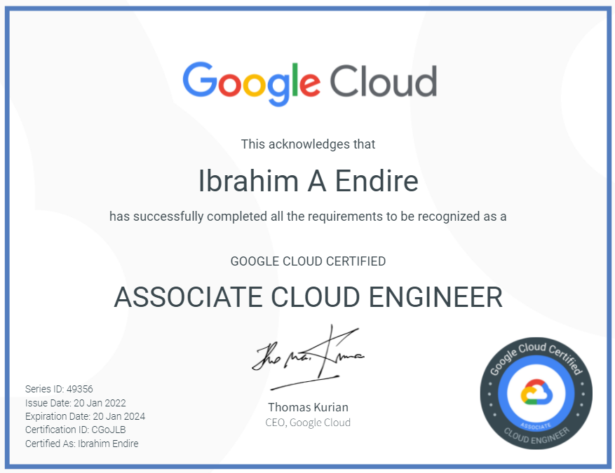
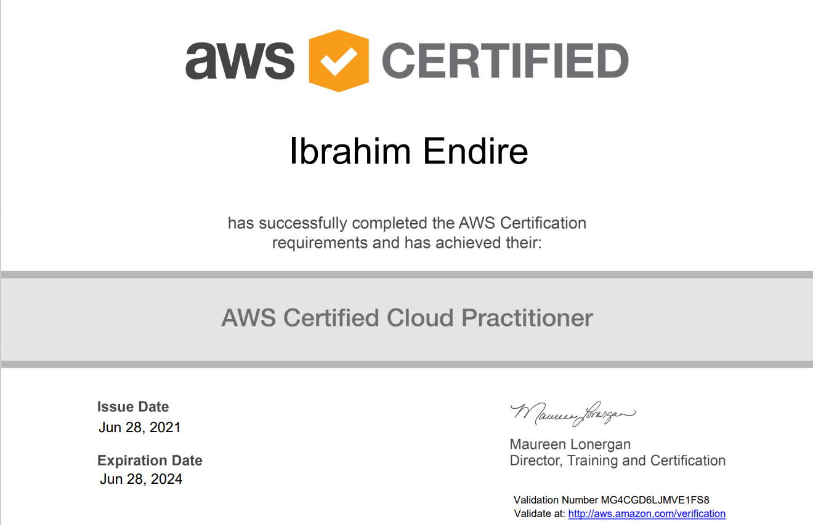
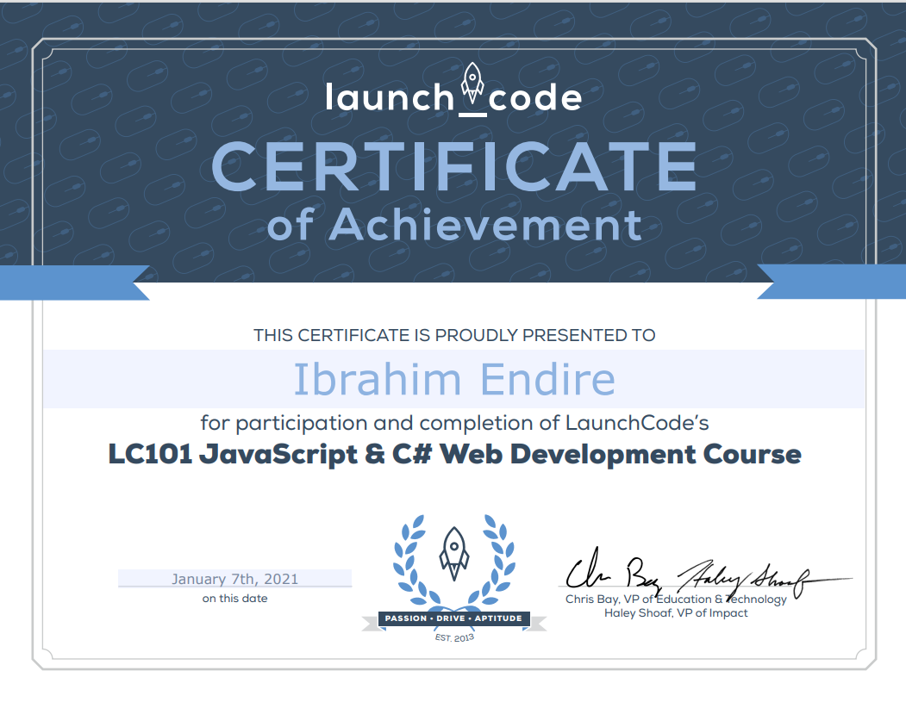
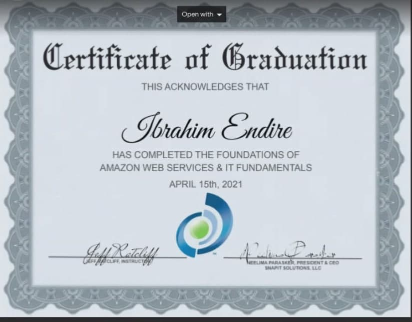
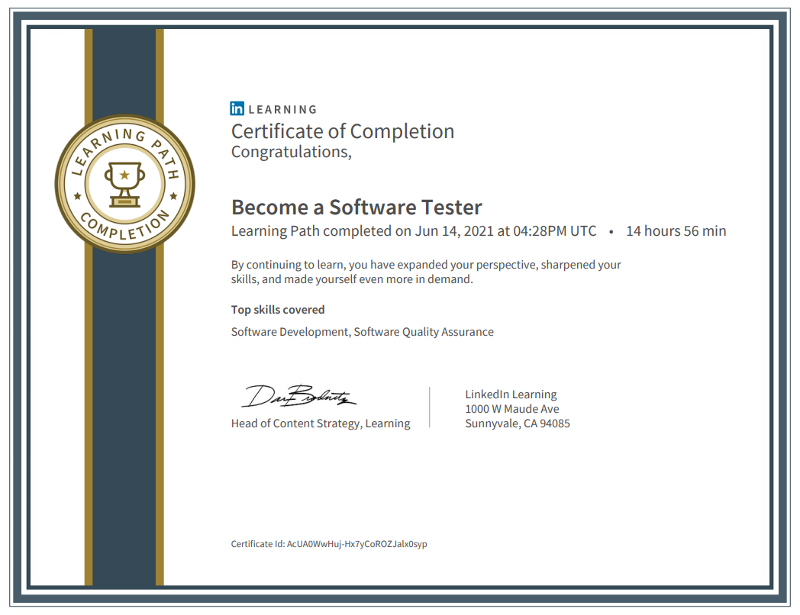

Ibrahim Endire
Cloud Engineer /Full stack developer
Summary :
- Strong Knowledge and experience of all phases of SDLC (Software Development Life Cycle).
- Proficient in using Postman for testing Web Services and used various types of assertions such as Xpath.
- Experience in applying Testing Methodologies, creating Test Plans, Executing Test Scripts, Automation of Test Cases, Defect Tracking, and Report Generation.
- Extensive experience in designing Test Cases, Test Scenarios, Test Scripts, and Test reports of manual and automated tests.
- Experience in Performance Testing of API and Web applications.
- Experience in bug reporting tools like JIRA.
- Experience in performance testing using JMeter.
- Hand-on experience using GIT
- Well-versed in different management scenarios like Change Control, Quality Assurance, Defect Tracking, System Integration, and Task Scheduling.
- Good programming skills in JavaScript, C#, java
- Proficient in using SQL queries
- Excellent interpersonal skills, proven team player with an analytical bent to problem solving and delivering under high-stress environments.
- Good analytical and communication skills and ability to work independently with minimal supervision and perform as part of a team
- Experienced and certified in different cloud technology (AWS, Google, Azure)
Featured Projects
View selected projects below. More information can be found at github.com.
LaunchCode Liftoff project
View project / case studyLaunchCode
HTML something LaunchCode project View project
HTML something LaunchCode project case study
Work Experience
Lab Technician
Kansas city testing and engineering
2018 -2021
Tech Support Enginner
Infosys
2021 -2022
Azure Support Enginner
Microsoft
2021 -Current
Education And Certifications
Associate Cloud Engineer
Associate Cloud Engineer
Amazon web services
Amazon web Service
LaunchCode - Kansas City
Full stack web Development
SnapIT solutions - Kansas City
Amazon web Service
Linkedin learning
Software testing
